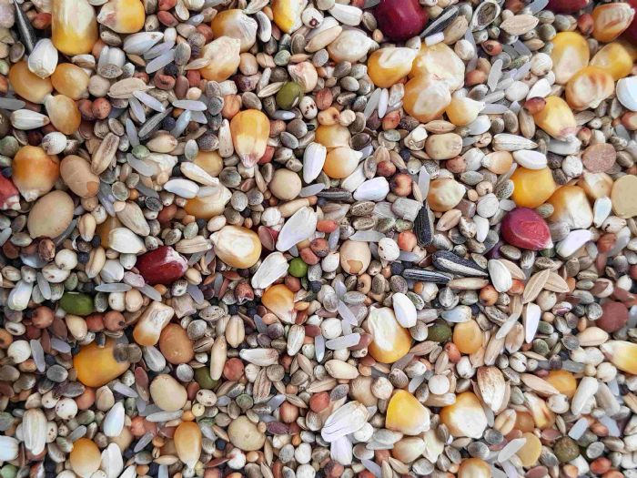
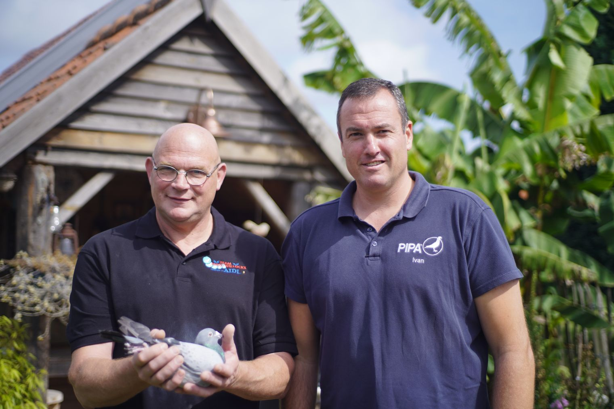

Uw duiven zijn atleten. Voeder ze ernaar.
AIDI is het voedingsconcept van Team Noël-Willockx. Tien mengelingen, veertien supplementen, en bij elk product de gemeten waarden. Geen beloftes, cijfers.

AIDI Mix 3
Vlucht
Een duif heeft niet het hele jaar hetzelfde nodig
Het gamma volgt het seizoen. Elke fase stelt andere eisen aan brandstof, bouwstoffen en herstel, en dus een andere mengeling.
Winter & rust
Veel ruwvezel, weinig vet. Ongelimiteerd te voederen zonder dat duiven aanvetten.
Bekijk de mengelingen 02Kweek
Hoog gediversifieerd opneembaar eiwit voor de jongen, zonder de ouderdieren uit te putten.
Bekijk de mengelingen 03Vlucht
Vijf vliegmengelingen, van snelheidsvlucht tot overnachtfond. Elk met een eigen macroprofiel.
Bekijk de mengelingen 04Rui
Verhoogd aandeel aminozuren en een goede omega-verhouding voor een vlekkeloze pluimkwaliteit.
Bekijk de mengelingenWaarom wij de cijfers erbij zetten
Koolhydraten en vetten als brandstof, eiwitten voor de opbouw, vitamines en mineralen als bescherming. De best mogelijke balans tussen die groepen is de sleutel tot succes: voor déze afstand, in dít weer, na díe vlucht.
Daarom publiceren we bij elke mengeling het ruw vet, het ruw eiwit, het opneembare eiwit, de koolhydraten, de omzetbare energie, de ruwe celstof en de omega-verhouding. Niet omdat het mooi staat, maar omdat u er een keuze mee kunt maken.
Het gaat om het opneembare eiwit, niet om het ruwe. Dat onderscheid maakt het verschil tussen een duif die de opeenvolgende wedstrijden afwerkt en een duif die halverwege het seizoen leegloopt.
Alle tien mengelingen vergeleken
Verhouding vet / eiwit / koolhydraten. De volledige waarden staan bij elk product.
Het gamma
Zesentwintig producten in drie lijnen. Alles wordt in België gemaakt.

De resultaten
Op eigen hok en bij anderen. Nationale asduiven van de KBDB over de laatste jaren, telkens met de betrokkenheid van Team Noël-Willockx.

Twee specialisten, vijfenveertig jaar
Eddy Noël staat voor meer dan veertig jaar ervaring in de duivensport. Een ruim deel daarvan werkte hij als gespecialiseerd voedingsdeskundige en ontwikkelde hij hoogkwalitatieve, uitgebalanceerde voermengelingen en bijproducten. Hij is een autoriteit op vlak van voeding, geeft lezingen over verduisteren en bijlichten, kweek- en vliegprestaties en hokklimaat, en begeleidde diverse tophokken.
Ivan Willockx leerde de kneepjes van het topsportvak als ex-profvoetballer. Vandaag is hij duivenmakelaar en bezoekt hij in die hoedanigheid veel liefhebbers. Daardoor kent hij als geen ander de dagdagelijkse noden van topspelers.
Het systeem, uitgeschreven
Veertien vlieg-, kweek- en ruischema's. Week per week, met de juiste mengeling en het juiste supplement op het juiste moment. Gratis te downloaden.
Waar koopt u AIDI?
AIDI is verkrijgbaar bij ruim zestig verkooppunten en invoerders in elf landen. Of bel Eddy of Ivan rechtstreeks. Advies kost niets.